SOII · curso 2
2. Interbloqueos · SOII
2.1 Recursos
Los recursos son objetos que pueden ser otorgados por el SO a los procesos. Pueden ser dispositivos hardware o piezas de información. La secuencia de acciones requerida para utilizar un recurso es:
- Solicitar el recurso
- Usar el recurso
- Liberar el recurso.
Si el recurso no está disponible cuando se solicita, el proceso espera. En algunos SOs, esto implica que se bloquea automáticamente y se despierta cuando el recurso esté disponible. En otros, la solicitud falla con un código de error y el proceso puede decidir si va a esperar un poco y volver a intentarlo.
Aunque en el segundo caso el proceso no está bloqueado, es como si lo estuviera, pues se encuentra en un ciclo solicitando el recurso, pasando a estado inactivo y después intentándolo de nuevo. Supondremos que cuando a un proceso se el niega el acceso a un recurso pasa a estado inactivo.
La naturaleza exacta de la solicitud depende del sistema. En algunos casos existe la syscall request para que los procesos pidan los recursos explícitamente. En otros, los únicos recursos que conoce el SO son los archivos especiales que sólo un proceso puede tener abierto a la vez (con la syscall open habitual).
2.1.1 Adquisición de Recursos
Para ciertos tipos de recursos, es responsabilidad de los procesos de usuario administrar su uso. Una manera de permitir esto es asociar un semáforo binario o mutex con cada recurso. Los tres pasos antes listados se implementan como:
- Una operación
downen el semáforo para adquirir el recurso. - Usarlo
- Finalmente realizar una operación
uppara liberarlo.
Cuando los procesos necesitan varios recursos, simplemente se adquieren uno después del otro. Ahora consideremos dos procesos que solicitan dos recursos.
- Si los procesos piden los recursos en el mismo orden no aparecerán interbloqueos.
- Si los procesos piden los recursos en distinto orden, pueden aparecer interbloqueos:
- Uno de los procesos adquiere su primer recurso e inmediatamente después el otro proceso adquiere el otro recurso. Entonces, ambos procesos se bloquearán cuando intenten solicitar el recurso que les falta.
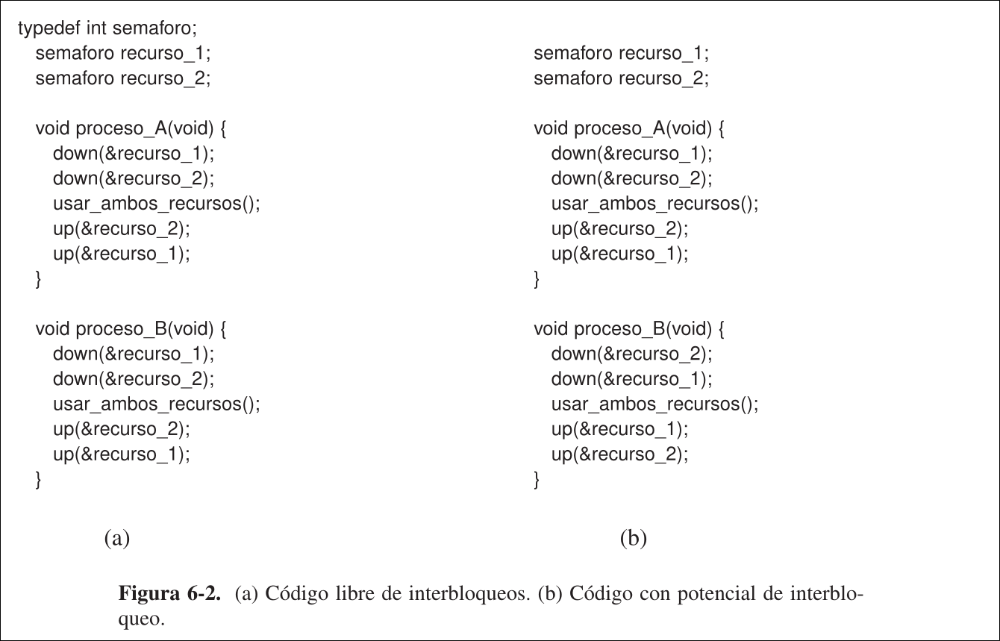
2.2 Introducción a los Interbloqueos
Un conjunto de procesos está en interbloqueo si cada proceso del conjunto esa esperando un evento que sólo puede ser ocasionado por otro proceso del conjunto. Como todos los procesos están en espera, ninguno producirá alguno de los eventos que podrían despertar a cualquiera de los otros, así que todos seguirán esperando para siempre.
Para este modelo supondremos que los procesos tienen sólo un hilo y que no hay interrupciones posibles para despertar a un proceso bloqueado. Si no hay interrupciones se evita que un proceso que de cualquier forma estaría en interbloqueo sea despertado por una interrupción y ocasione eventos que liberen a otros procesos del conjunto.
Normalmente se producen interbloqueos de recursos, en el que el evento por el que esperan los procesos es la liberación de un recurso que tiene otro miembro del conjunto.
2.2.1 Condiciones para los Interbloqueos de Recursos
Deben aplicarse cuatro condiciones para que suceda un interbloqueo de recursos:
- Condición de exclusión mutua: cada recurso se asigna en un momento dado a sólo un proceso, o está disponible.
- Condición de contención y espera: los procesos que actualmente contienen recursos que se les otorgaron antes pueden solicitar nuevos recursos.
- Condición no apropiativa: los recursos otorgados previamente no se pueden quitar a un proceso por la fuerza, deben ser liberados explícitamente por el proceso que los contiene.
- Condición de espera circular: debe haber una cadena circular de dos o más procesos, cada uno de los cuales espera un recurso contenido por el siguiente miembro de la cadena Cada condición se relaciona con una política que puede tener o no un SO.
2.2.2 Modelado de Interbloqueos
Estas cuatro condiciones se pueden modelas mediante grafos dirigidos, los grafos de recursos.
- Tipos de nodos:
- Procesos->círculos
- Recursos->cuadrados
- Significado de arcos:
- Arco de recurso a proceso: el recurso fue solicitado previamente por, y asignado a , y actualmente es contenido por ese proceso
- Arco de proceso a recurso: el proceso está actualmente bloqueado en espera de ese recurso.
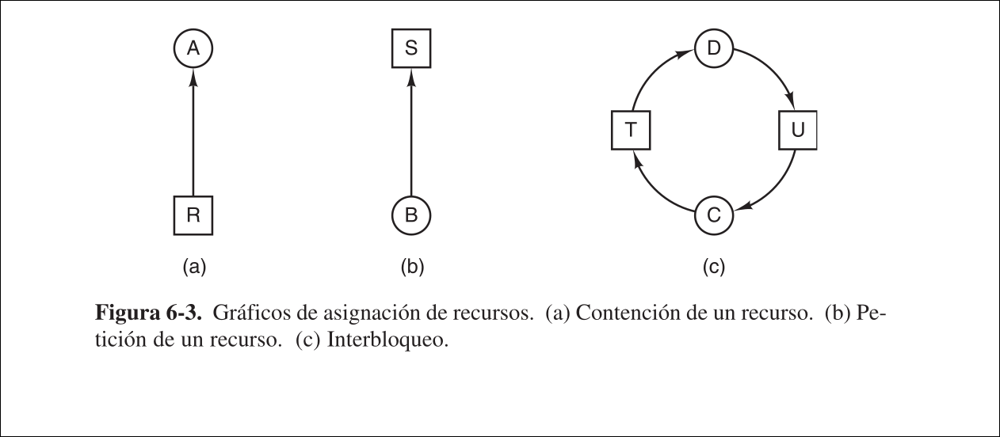
Un ciclo en el grafo indica que hay interbloqueo que involucra a los procesos y recursos en el ciclo. Permiten ver si una secuencia de peticiones y liberaciones conduce al interbloqueo realizándolas paso a paso, y después de cada paso comprobando si el grafo tiene algún ciclo.
Por ejemplo, si tenemos los procesos
-
Si se ejecutan los 3 procesos secuencialmente, uno detrás de otro, no aparecen interbloqueos (ya que no hay competencia por los recursos), pero tampoco tiene paralelismo.
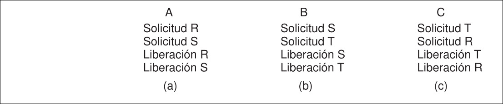
-
Si tenemos la siguiente ejecución concurrente, después de haber realizado la petición 4,
se bloquea en espera de . Después, y se bloquean también. Aparece un ciclo, y, por tanto, un interbloqueo. 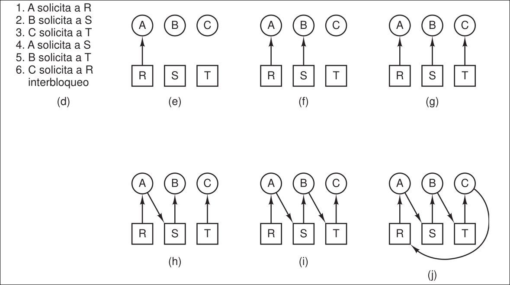
2.2.3 Estrategias para abordar los Interbloqueos
- Ignorar el problema
- Detección y recuperación: dejar que ocurran los interbloqueos, detectarlos y tomar acción.
- Evitarlos dinámicamente: asignar cuidadosamente los recusos
- Prevención: evitar estructuralmente una de las cuatro condiciones
2.3 Ignorar el problema: Algoritmo del Avestruz
El método más sencillo es ignorar el problema de los interbloqueos. Los costes asociados a intentar solucionarlos reducirían considerablemente el rendimiento del sistema, por lo que si los interbloqueos no son muy frecuentes suele ser preferible a no tomar acción contra ellos.
2.4 Detección y Recuperación de un Interbloqueo
En esta técnica, el sistema no trata de evitar los interbloqueos, en su lugar intenta detectarlos cuando ocurren y luego actúa para recuperarse de ellos.
2.4.1 Detección de Interbloqueos con un Recurso de cada Tipo
Se usará el grafo de recursos para determinar si existe un interbloqueo, por lo que se necesita un algoritmo para la detección de ciclos en un grafo dirigido. Se parte de una lista de nodos
- Para cada nodo N en el gráfico, realizar los siguientes cinco pasos con N como el nodo inicial.
- Inicializar L con la lista vacía y designar todos los arcos como desmarcados.
- Agregar el nodo actual al final de L y comprobar si el nodo ahora aparece dos veces en L. Si lo hace, el gráfico contiene un ciclo (listado en L) y el algoritmo termina.
- Del nodo dado, ver si hay arcos salientes desmarcados. De ser así, ir al paso 5; en caso contrario, ir al paso 6.
- Elegir un arco saliente desmarcado al azar y marcarlo. Después seguirlo hasta el nuevo nodo actual e ir al paso 3.
- Si este nodo es el inicial, el gráfico no contiene ciclos y el algoritmo termina. En caso contrario, ahora hemos llegado a un punto muerto. Eliminarlo y regresar al nodo anterior; es decir, el que estaba justo antes de éste, hacerlo el nodo actual e ir al paso 3.
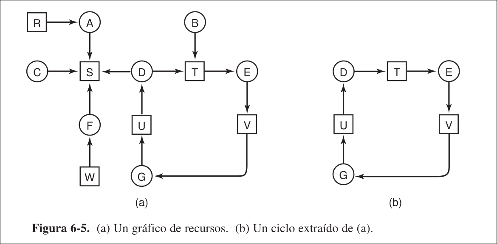
En otras palabras: se toman los nodos de uno en uno, como la raíz de lo que se espera sea un árbol, y se realiza una búsqueda de un nivel de profundidad en él. Si se regresa a un nodo que ya se encontró, hay un ciclo. Si agota todos los arcos de cualquier nodo, regresa al anterior.
Si regresa a la raíz y no puede avanzar más, el subgrafo que se puede alcanzar desde el nodo actual no tiene ciclos. Si esto se cumple para todos los nodos, no hay ciclos en el grafo entero, por lo que el sistema no está en interbloqueo.
2.4.2 Detección de Interbloqueos con Varios Recursos de cada Tipo
- Partimos de que existen
procesos, y hay tipos de recursos. es el vector de recursos existentes, donde es el número de instancias del recurso existentes es el vector de recursos disponibles, donde es el número de instancias del recurso disponibles en un momento dado. es la matriz de asignaciones actuales, donde es el número de instancias del recurso que están contenidas por el proceso es la matriz de peticiones, donde indica el número de instancias del recurso que desea el proceso . Se debe cumplir que cada recurso o esté asignado o esté disponible Para la comparación de vectores se usa la relación , que indica que para
Todos los procesos están desmarcados al principio y se van marcando conforme progrese el algoritmo, indicando que pueden completarse. Cuando el algoritmo termine, todos los procesos no marcados están en interbloqueo.
- Buscar un proceso desmarcado,
, para el que la i-ésima fila de sea menor o igual que . - Si se encuentra dicho proceso, agregar la i-ésima fila de
a , marcar el proceso y regresar al paso 1. - Si no existe dicho proceso, el algoritmo termina.
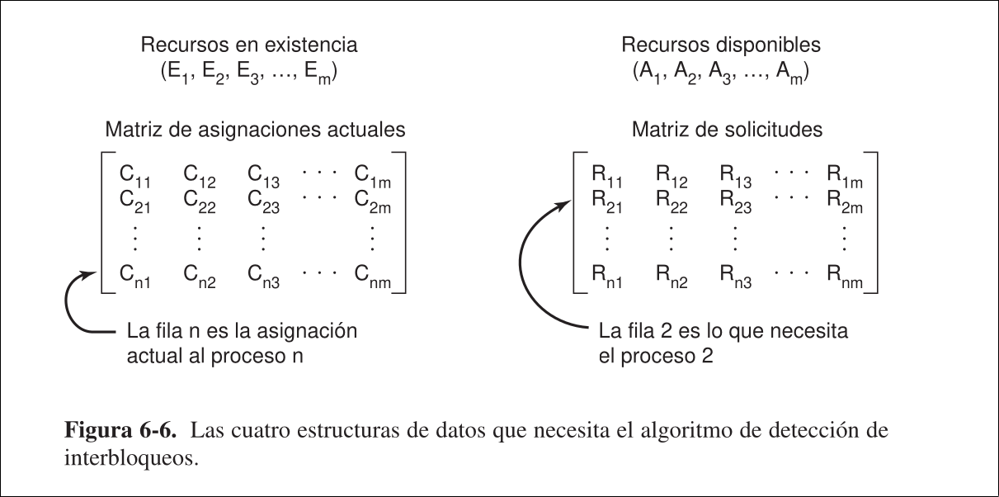
Se supone que todos los procesos **mantienen** todos los recursos adquiridos **hasta que terminan**. Aunque el algoritmo **no es determinístico** (ya que puede ejecutar los procesos en cualquier orden posible), el **resultado siempre es el mismo**.En otras palabras: se busca un proceso que se pueda ejecutar hasta completarse, es decir, que tenga demandas de recursos que se puedan satisfacer con los recursos disponibles actuales. El proceso seleccionado se ejecuta hasta que termina y devuelve sus recursos a la reserva. Después se marca como completado.
Ahora que sabemos cómo detectar interbloqueos, surge la duda de cuándo buscarlos:
- Comprobar cada vez que se realiza una petición de un recurso. Detectaría los bloqueos lo más pronto posible, pero sería muy costoso.
- Comprobar cada
minutos - Comprobar cuando haya disminuido el uso de la CPU por debajo de un mínimo. Si hay suficientes procesos en interbloqueo, habrá pocos ejecutables y la CPU estará inactiva con frecuencia.
2.4.3 Recuperación de un Interbloqueo
Recuperación por medio de apropiación
En ocasiones puede ser posible quitar temporalmente un recurso a su propietario actual y otorgárselo a otro proceso. En muchos casos esto puede requerir de intervención manual, sobre todo en SOs de procesamiento por lotes que se ejecutan en mainframes.
Poder hacer esto sin que el proceso expropiado lo note depende de la naturaleza del recurso: muchas veces es difícil o imposible
Recuperación a través del retroceso
Si se sabe que pueden aparecer interbloqueos, puede hacerse que los procesos realicen puntos de comprobació periódicamente escribiendo lo necesario en un archivo para reiniciarse más tarde. El punto de comprobación contiene la imagen de la memoria y qué recursos están asignados al proceso en este instante.
Para que sean más efectivos, los nuevos puntos de comprobación no deben sobrescribir los anteriores, sino que deben escribirse en nuevos archivos para que se acumule una secuencia completa conforme se vaya ejecutando el proceso.
Así, al detectar un interbloqueo, es fácil ver qué recursos se necesitan. Para realizar la recuperación, un proceso que posee un recurso necesario se revierte a un punto de comprobación antes de que lo adquiera. Pero se pierde el trabajo realizado antes de el punto de comprobación.
Recuperación a través de eliminación de procesos
La forma más cruda y simple de romper un interbloqueo es eliminar a uno o más procesos. Se elimina uno de los procesos en el ciclo, a ver si se rompe el interbloqueo. Si no se rompe, se van eliminando más hasta que suceda. También se puede eliminar un proceso que no esté en el ciclo para liberar sus recursos.
El proceso a eliminar se elige con cuidado, ya que está conteniendo recursos que necesita cierto proceso en el ciclo. Siempre que sea posible, es mejor eliminar un proceso que se pueda volver a ejecutar desde el principio sin efectos dañinos.
2.5 Evitar los Interbloqueos
Hasta ahora se supuso que los procesos solicitaban todos los recursos que necesitaban a la vez, pero en la mayoría de sistemas se solicitan de uno en uno. Entonces, el sistema debe ser capaz de decidir si es seguro otorgar un recurso cuando este es solicitado para poder evitar interbloqueos.
2.5.1 Trayectorias de los recursos
Este es un modelo para lidiar con dos procesos,
-
El eje horizontal representa el número de instrucciones ejecutadas por el proceso
y el vertical por el . -
Cada punto en el diagrama representa un estado conjunto de ambos procesos.
- Con un solo procesador, todas las rutas deben ser horizontales o verticales, nunca diagonales
- El movimiento es hacia arriba o hacia la derecha (pues los procesos no pueden ejecutarse atrás en el tiempo).
-
Uso de recursos de
impresora, trazador. -
Uso de recursos de
impresora, trazador.
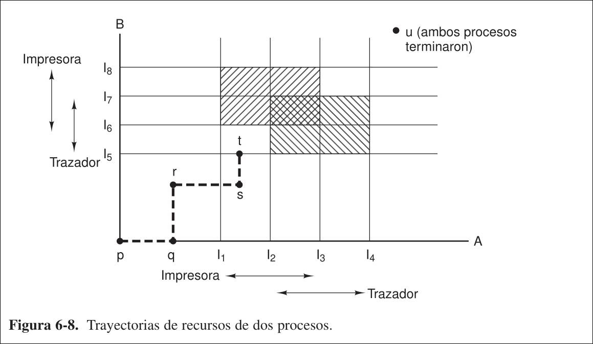
Las regiones sombreadas son en especial interesantes. La región con las líneas que se inclinan de suroeste a noreste representa cuando ambos procesos tienen la impresora. La regla de exclusión mutua hace imposible entrar a esta región.
De manera similar, la región sombreada de la otra forma representa cuando ambos procesos tienen el trazador, y es igual de imposible.
Si el sistema entra alguna vez al cuadro delimitado por
En el punto
El sistema debe decidir si lo otorga o no. Si se otorga el recurso, el sistema entrará en una región insegura y en el interbloqueo, en un momento dado. Para evitar el interbloqueo,
2.5.2 Estados Seguros e Inseguros
En cualquier instante hay un estado actual que consiste en
Se dice que un estado es seguro si hay cierto orden de programación en el que se puede ejecutar cada proceso hasta completarse, incluso si todos ellos solicitasen repentinamente su número máximo de recursos de inmediato.
Ejemplo: se tienen los procesos
- Estado de la figura A es seguro, ya que existe una secuencia de asignaciones que permite completar todos los procesos
- Si se ejecuta
exclusivamente, hasta que pida y obtenga dos instancias más del recurso, se llega a la figura B. - Al completarse
, se llega a la figura C. - Si después de ejecuta
de la misma manera, se llega a la figura D. - Cuando
se complete, se obtiene la figura E - Ahora
puede obtener las seis instancias del recurso que necesita y también completarse.
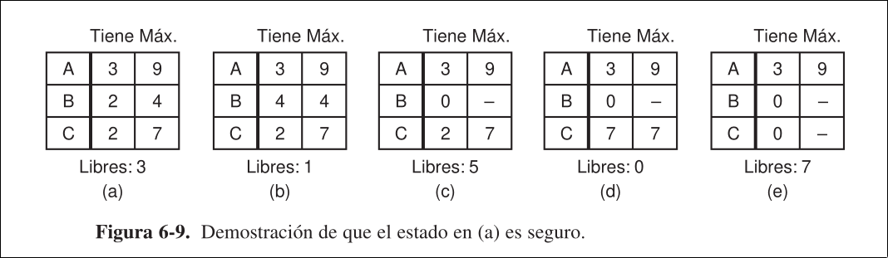
- Si partimos de la figura A anterior,
solicita y obtiene 1 recurso, se llega a la figura B, que muestra un estado inseguro. - Si se ejecuta
exclusivamente, hasta que pida y obtenga todos sus recursos, se llega a la figura C. - Al completarse
, se llega a la figura D. - Ahora no hay manera de continuar, sólo hay 4 instancias libres y ambos procesos activos necesitan 5 de cada uno.
Tampoco funcionaría si a partir del paso 0 se ejecutase
o . Entonces, el paso de la figura a la supuso convertir un estado seguro a uno inseguro.
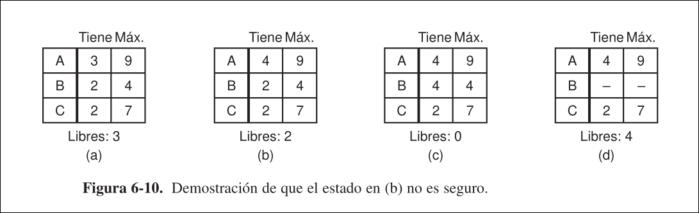
Un estado inseguro no es un estado de interbloqueo, pues el sistema puede ejecutarse durante cierto tiempo. La diferencia entre un estado seguro y uno inseguro es que, desde un estado seguro, el sistema puede garantizar que todos los procesos terminarán. Desde uno inseguro no se puede dar esa garantía.
2.5.3 Algoritmo del Banquero para un solo Tipo de Recurso
El algoritmo considera cada petición que va sucediendo y analiza si al otorgarla se produce un estado seguro. Si es así, se otorga. En caso contrario, se pospone hasta más tarde. Para ver si un estado es seguro, se comprueba si tiene suficientes recursos para satisfacer a un proceso. De ser así, se asume que se devuelven los recursos otorgados a ese proceso y se comprueba el siguiente más cercano al límite. Si todos podrán satisfacerse en algún momento, el estado es seguro.
Ejemplo: cuatro procesos
- Todos los procesos saben de antemano cuántos recursos van a necesitar (figura A).
- Si se llega a la situación de la figura B, se habrá alcanzado un estado seguro (se puede ejecutar
hasta que termine y libere sus recursos, después o , y así sucesivamente). - Si a partir de la figura B se otorga una petición de
para una unidad, se llegaría a la figura C, que muestra un estado inseguro (si todos los procesos pidieran repentinamente todos los recursos que necesitan no se podría satisfacer a ninguno).
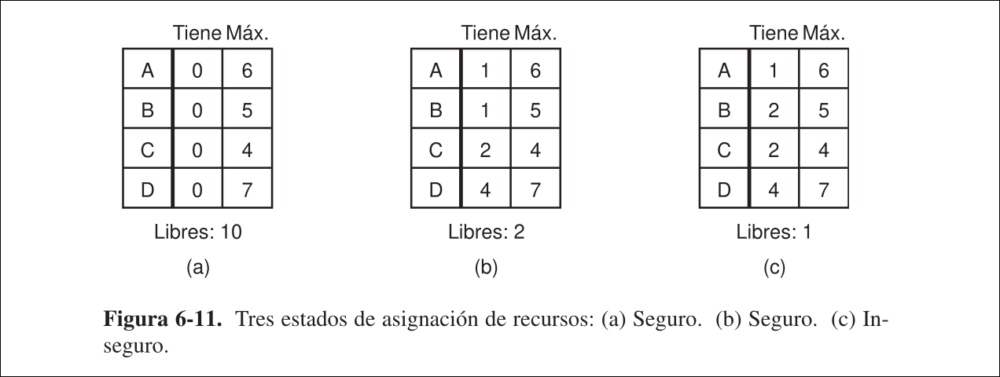
Un estado inseguro no tiene por qué conducir a un interbloqueo. Puede ser que a partir de la figura
El algoritmo del banquero considera cada petición a medida que va ocurriendo, y analiza si al otorgarla se produce un estado seguro. Si es así, se otorga la petición; en caso contrario, se pospone hasta más tarde. Para ver si un estado es seguro, el banquero comprueba si tiene los suficientes recursos para satisfacer a algún cliente.
2.5.4 Algoritmo del Banquero para Varios Tipos de Recursos
Además de
El algoritmo para determinar si un estado es seguro es el mismo que se usaba para detectar interbloqueos con varios tipos de recursos:
- Buscar un proceso desmarcado,
para el que la fila de sea . -
- Si se encuentra dicho proceso: Se agrega la fila
de a y se marca el proceso para regresar al paso 1 - Si no existe, termina
- Si se encuentra dicho proceso: Se agrega la fila
- El algoritmo finaliza
- Cuando todos los procesos estén marcados: estado inicial era seguro
- No se encuentra ningún proceso desmarcado que cumpla la condición del paso 1: hay interbloqueo.
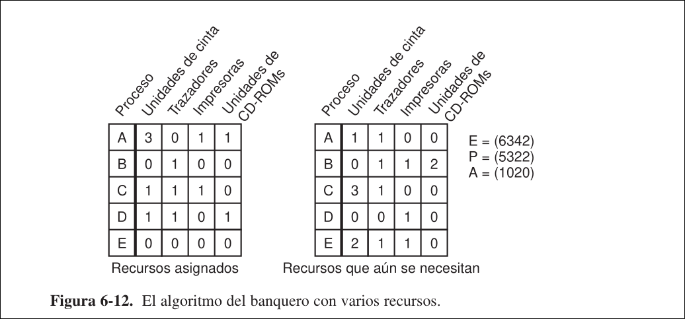
Ejemplo: 1. EL estado de la figura es seguro 2. Si el proceso $B$ pide una impresora, se le puede otorgar ya que el estado resultante también es seguro ($D$ puede terminar, y después $A$ o $E$, seguidos por el resto) 3. Si después $E$ solicita la otra impresora, llevaría a un interbloqueo, así que la petición de $E$ se retrasa unos momentos.Los procesos raras veces saben de antemano cuáles son sus máximas necesidades de recursos. El número de procesos no es fijo, varía dinámicamente a medida que los nuevos usuarios inician y cierran sesión. Los recursos que se consideraban disponibles pueden desvanecerse. Por ello pocos sistemas existentes usan el algoritmo del banquero para evitar interbloqueos.
2.6 Prevenir los Interbloqueos
Entonces, evitar los interbloqueos es imposible, pues se requiere información sobre peticiones futuras que no se conocen. En su lugar, los interbloqueos se pueden prevenir asegurando que por lo menos una de las condiciones para que sucedan nunca se cumpla.
Nota
Evitar es q no haces nada para q haya menos interbloqueos pero intentas solucionarlo antes d q ocurran y prevenir es atacar las características d los interbloqueos para q no ocurran directamente
2.6.1 Cómo atacar la condición de Exclusión Mutua
Si ningún recurso se puede asignar exclusivamente a un único proceso, nunca habrá interbloqueos. Naturalmente, para que varios procesos puedan contener una impresora a la vez, no se les puede permitir escribir en ella al mismo tiempo. En su lugar, se coloca la salida de la impresora en una cola de impresión, de manera que varios procesos puedan generar la salida al mismo tiempo. Así, el único proceso que realmente solicita la impresora física es el demonio de impresión que nunca solicitará otros recursos, por lo que ya no aparecerán interbloqueos para la impresora.
Si el demonio se programa para comenzar a imprimir aunque no todo el archivo esté en la cola, la impresora podría permanecer inactiva largos períodos de tiempo si un proceso decide esperar después de la primera ráfaga de salida en el archivo que envió a la cola. Para evitar esto, los demonios normalmente se programan para imprimir sólo después de que esté disponible el archivo de salida completo. Esto podría provocar un interbloqueo: si dos procesos llenan cada uno la mitad de la cola de impresión pero ninguno termina de producir su salida completa, ninguno de los 2 podrá continuar.
Aún así, se puede extraer una idea útil de este concepto: evitar asignar un recurso cuando no sea absolutamente necesario y tratar de asegurarse de que la menor cantidad posible de procesos soliciten este recurso.
2.6.2 Cómo atacar la condición de Contención y Espera
Si se impide que los procesos que contienen recursos esperen por más recursos, nunca habría interbloqueos. Una manera de lograr esto es requerir que todos los procesos soliciten todos sus recursos antes de empezar a ejecutarse. Si todo está disponible, se le asignará y podrá ejecutarse hasta el final. Si no está todo disponible, no se asignará nada y el proceso esperará.
- Tiene el mismo problema que el algoritmo del banquero: la mayoría de procesos no saben cuántos recursos necesitarán antes de ejecutarse.
- Los recursos no se usan de manera óptima.
Aún así, algunos sistemas de procesamiento por lotes de mainframes lo usan, requiriendo al usuario que liste todos los recursos necesarios en la primera línea de trabajo.
Otra manera de conseguir esto es requerir que un proceso que solicita un recurso libere temporalmente todos los recursos que contiene en ese momento. Después puede tratar de obtener todo lo que necesite de una vez.
2.6.3 Cómo atacar la Condición no Apropiativa
Si permite retirarle temporalmente un recurso por la fuerza a un proceso sin dañar su ejecución, nunca habría interbloqueos. Muchos recursos son no apropiativos, así que retirárselos a los proceso sin dañarlos no es posible. Ciertos de estos recursos se pueden virtualizar para evitar este situación:
- Al usar una cola de impresión en el disco con un demonio de impresión para manejar la impresora real, se eliminan los bloqueos que la involucran.
- Sin embargo, aparece la posibilidad de interbloqueo por espacio en el disco. Con discos grandes es muy difícil llegar a un interbloqueo por esto, ya que es difícil que se queden sin espacio disponible. No todos los recursos se pueden virtualizar. Por ejemplo: los registros de las bd o las tablas del SO se deben bloquear para usarse, de lo cual puede surgir un interbloqueo.
2.6.4 Cómo atacar la condición de Espera Circular
Si se impide que aparezca una cadena circular de varios procesos en espera de recursos que contienen otros procesos de la cadena, nunca habrá interbloqueos.
Un método es establecer una regla que diga que un proceso tiene derecho sólo a un recurso en cada momento. Si necesita otro, debe liberar el primero. Naturalmente, esto haría imposible ejecutar ciertos procesos.
Otro método es proporcionar una numeración global de todos los recursos, de manera que los procesos pueden solicitar recursos cada vez que quieran, pero todas las peticiones se deben realizar en orden numérico.
Así, el grafo de asignación de recursos nunca puede tener ciclos. Desmotración:
- 2 procesos y 2 recursos: partiendo de que
contiene el recurso y el el , se obtendrá un interbloqueo sólo si solicita el recurso y el . - Si
no podrá solicitar , pues es menor que el que ya contiene. - Si
no podrá solicitar , pues es menor que el que ya contiene. - Entonces, el interbloqueo es imposible.
- Si
- Con un número arbitrario de procesos y recursos: en cada instante, uno de los recursos asignados será el más alto. El proceso que lo contenga nunca pedirá un recurso que ya está asignado. En un momento dado, terminará y liberará sus recursos. En ese punto, otro proceso contendrá el recurso más alto y también podrá terminar.
- Entonces existe un escenario en el que todos los procesos terminan, así que no hay interbloqueo.
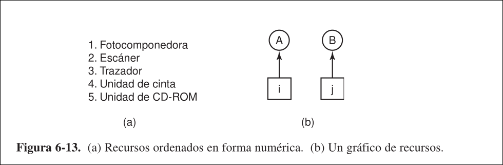
Una variación del método anterior es retirar el requerimiento de que los recursos se adquieran en una secuencia cada vez más estricta, y simplemente obligar a que ningún proceso pueda solicitar un recurso con numeración menor que los que ya contiene.
El ordenamiento numérico soluciona el problema, pero puede ser imposible encontrar un ordenamiento que satisfaga a todos los procesos cuando el número de recursos potenciales y usos distintos es muy grande.
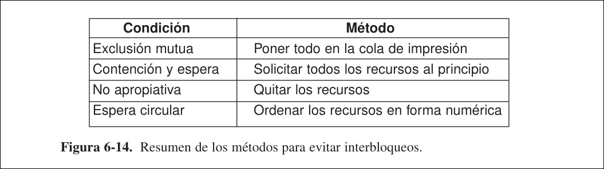